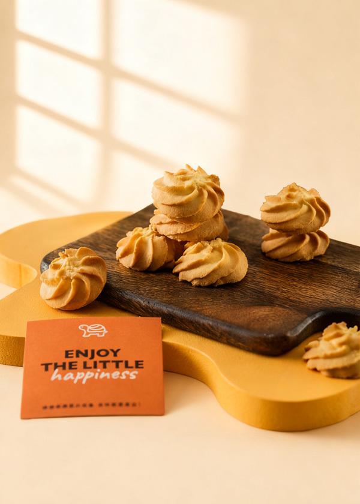
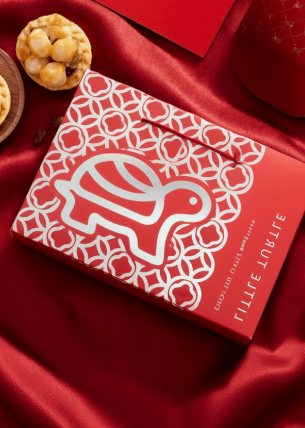
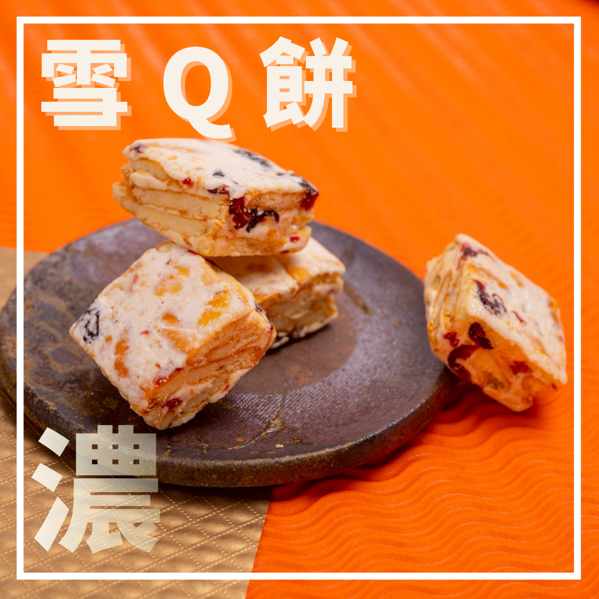
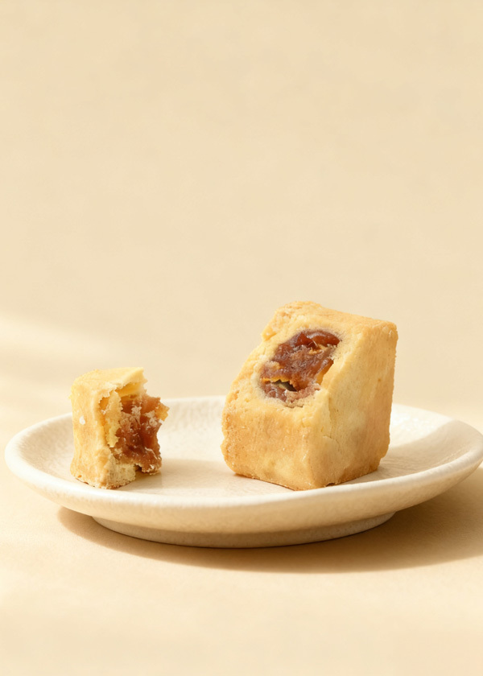

馬卡濃
不限盒數 9 折，表列價格 $297／$333／抹茶待定。
早鳥：48 盒 85 折、72 盒 8 折。
午鳥、晚鳥：72 盒 85 折、120 盒 8 折。
查看免運條件
早鳥：黑貓滿 $1,800、超商 3 盒免運。
午鳥：黑貓滿 $2,000、超商 3 盒免運。
晚鳥：黑貓滿 $2,000、超商 5 盒免運。
這些折扣和運費，是你提供的表格內容。
活動跨 2026 年與 2027 年
頂奢綜合款：特價 $999，1 盒超商免運；頂奢禮盒不再套用禮盒折扣。
買禮盒送紅包：送完為止；紅包內容與適用範圍待確認。
最後配送：原表寫最後宅配 1/29、最後夜市自取 2/2–2/3；1/29 是出貨日或到貨日需再確認。
這兩款的優惠和禮盒不同。
不限盒數 9 折，表列價格 $297／$333／抹茶待定。
早鳥：48 盒 85 折、72 盒 8 折。
午鳥、晚鳥：72 盒 85 折、120 盒 8 折。
早鳥：黑貓滿 $1,800、超商 3 盒免運。
午鳥：黑貓滿 $2,000、超商 3 盒免運。
晚鳥：黑貓滿 $2,000、超商 5 盒免運。
不限盒數 85 折 $323。
表列 60～72 盒 8 折 $304；160 盒 75 折 $285。三個活動時段相同，60～72 盒的計算方式待確認。
早鳥：黑貓滿 $999、超商 2 盒免運。
午鳥：黑貓滿 $1,500、超商 2 盒免運。
晚鳥：黑貓滿 $1,500、超商 3 盒免運。
資料來源：你提供的 2027 商品表與活動優惠表。禮盒品項、規格、優惠合併及配送細節，仍以最後確認為準。
下面是我們的想法，還不是已經確定的優惠。

讓公司同事試吃，選出最喜歡的禮盒。
我們做：準備試吃和票選表；吃完再報價。
試吃內容、費用與配送方式待確認。用 C 紅色禮盒試算：每盒 $568，訂 150 盒。

我們做：把這張報價圖傳給企業參考。
使用表格原有的 8 折；未含運費。不同款式能否合計 150 盒，還要確認。建議早鳥訂滿 150 盒，每滿 15 盒送 1 袋雙莓雪Q餅（21 入）。

我們做：確認成本後，放進企業報價圖。
這是我們新想的贈品，表格原本沒有。每筆訂單滿 150 盒才適用；不足 15 盒的部分不加送。贈品成本、適用款式、運費，以及是否能和 8 折、紅包一起送，都要先確認。建議訂滿 30 盒，可加公司名稱或 LOGO 貼紙。
我們做：收公司圖檔，做貼紙給客戶確認。
這是新提案，不是表格原本的優惠；盒數門檻、成本與製作時間待確認。
除了禮盒，企業也能加購點心給同事吃。OREO 雪Q 6 入 $168。
我們做：把加購選項放進報價圖。
這些是表格原有的商品價格，不是新折扣；加購與運費待確認。工作期程
下面是建議的工作時間。點開各階段，就能看到誰做什麼。
把禮盒內容、早鳥折扣、頂奢 999 元方案、運費及可接單量整理好，也一起決定試吃、貼紙和 150 盒加贈雪Q是否採用。
小烏龜確認商品與條件
浩太整理活動內容
整理之前買過禮盒的企業名單，準備聯繫紀錄表、試吃票選表、150 盒試算圖、加購介紹與電話話術。
小烏龜確認名單及商品資料
浩太整理名單與素材
依確認過的名單聯繫企業，問預算、盒數和預計送禮時間；有興趣的再傳資料。
浩太回訪與記錄
小烏龜協助回覆商品問題
邀請有意願的企業試吃；完成票選表、150 盒試算圖、999 元禮盒與雪Q加購素材，上線前一起核對內容。
小烏龜準備試吃組
浩太製作素材、聯繫客戶
發布活動頁與貼文，把禮盒 85 折、150 盒試算、頂奢與確認後的加購或贈品方案介紹給企業。
浩太發布素材、提供報價
小烏龜確認庫存與優惠設定
收集公司試吃票選結果，詢問喜歡的口味、盒數與收禮日期，交給小烏龜確認正式報價。
浩太追蹤試吃與需求
小烏龜確認價格與交期
詢問是否需要調整款式或數量，記錄何時能決定；有客製或大量需求就一起評估。
浩太企業回訪
小烏龜確認產能與配送
協助客戶整理發票、配送及貼紙需求；已確認的訂單開始安排備貨與校稿。
浩太整理採購需求
小烏龜報價、接單與備貨
提醒還在考慮的企業，並整理這一波的訂單及還需要追蹤的名單。
浩太提醒客戶、更新貼文
小烏龜核對訂單與付款
更新報價和活動頁，回訪還沒決定的企業；依已確認的訂單準備商品與包裝。
浩太更新素材、持續跟進
小烏龜接單與製作
逐筆確認品項、盒數、收件資料與交期；多地址或分批配送先個別確認。
小烏龜核對訂單與配送
浩太協助整理客戶需求
提醒仍有意願的企業 1/17 是午鳥最後一天，並確認接下來還能提供的款式與配送方式。
浩太提醒與更新素材
小烏龜確認供貨及配送
換上晚鳥資訊，核對已接訂單與收件資料；新的企業需求依實際產能回覆。
浩太更新活動資訊
小烏龜核對訂單、安排製作
依已確認的物流安排出貨並通知客戶；表格寫「最後宅配 1/29」，實際指出貨或到貨需先確認。
小烏龜出貨與客服
浩太更新配送說明
確認取貨地點、時間與商品數量，通知已約定取貨的客戶。
小烏龜準備商品與現場取貨
浩太協助通知
依原表安排夜市自取，記錄已取與未取訂單；晚鳥活動至 2/3。
小烏龜現場交付
浩太整理未完成事項
看看聯繫了多少企業、試吃和報價後有多少成交，以及哪些做法下次可以繼續用。
浩太整理活動結果
小烏龜分享訂單與客戶回饋
商品、試吃、報價、接單和出貨
浩太活動素材、企業回訪和追蹤
以上是建議分工，可以依實際狀況調整。